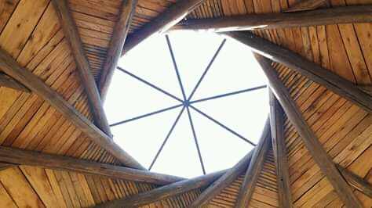

Techo Anillo Portante
Heptágono de adobe y techo de áridos

Techo Recíproco, techo vivo
Cupula central de vidrio, muros de adobe

Techo Recíproco, techo vivo
Cupula central de vidrio, muros de quincha
Techo Recíproco, techo vivo
Cupula central de vidrio, muros de quincha
Sobre relieves
Detalle de guarda zocalo protectora perimetral
Detalles en caña
Gleria de caña, cielo raso